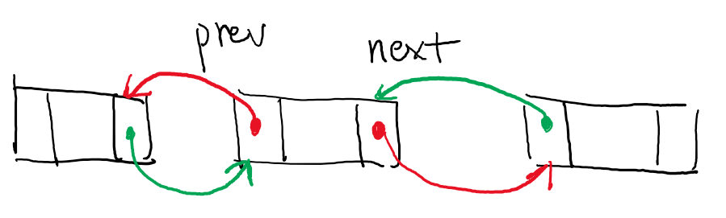

public: True class: center, middle # [C] 调试操作系统内核 蒋炎岩 <jyy@nju.edu.cn> 南京大学计算机软件研究所 --- class: center, middle # .red[期中考试预告] 4.18日星期四 随堂 闭卷 考试内容：并发、并发编程、虚拟化 <br/> ---- <br/> # .red[Lab2预告] 终于(快要)发布了！ --- # 本讲概述 > L1/L2：非常痛苦的存在 > > * 第一次在多处理器上写并发程序 > * 无数没有见过的神坑 > * 还让不让人活了？ ---- * Fault, Error, Failure的故事 * 测试/调试操作系统内核的建议 --- class: center, middle # 理论：Fault, Error, Failure --- # 三种“错误” 为什么bugs那么痛苦？ * 犯的fault (bug) * 看到的是failure (WA, TLE, SegFault, ...) * 但第一个error才是找到问题的关键 ---- .center[<img src="../static/wiki/os/2019/img/fault-error-failure.png" width="700px"/>] --- class: center, middle # Fault → Error 多做测试，做好测试 --- # 掩耳盗铃 不运行程序，就看不到failure啦 * 但OJ运行测试用例后会告诉你，.green[Wrong Answer] 过了样例就觉得没有fault啦 * 但OJ运行测试用例后会告诉你，.green[Wrong Answer] ---- 所以想要找到fault，首先要把fault转换成error * .red[测试]是其中一个途径 * 另一个途径是直接对代码进行.red[证明]/.red[验证] (out of scope) --- # 系统测试 完整地运行一次系统并观察其行为是否正确 > 是非常heavy-weight的测试方式，每次运行都会用去很多时间 > > * 例如在游戏中，就是“玩一次” > * 在OSLab中，就是`make run2`一次 ---- .float-right[] 系统测试是.red[最低效]也是.blue[最后]的测试手段 * 耗时很大，需要一个完整的周期 * 出现bug很难排查(哪都可能错) * 但通常是大家做实验一直的.red[唯一]测试手段 --- # 单元测试 仅对程序的.red[一部分]单独测试，程序这部分与其他部分的交互通过.red[模拟] (mocking)实现 > 成本通常比较低，可以反复运行 > > * 针对每个模块/函数做单元测试 > * 可以把bug限定在模块中 ---- 说白了，如果你在OS里写了一个`list_head`，你还要用OS代码测试它吗？ * 在外面写一个测试driver，还有一大把工具等着你呢 (比如Valgrind, AddressSanitizer, ...) 试试`-fsanitize=address` * demo: `make native` (native driver) * 实际你需要mock一些AM API，例如`_atomic_xchg` --- # 回归测试 修改任何一行代码，你都可能break整个系统 * 因此过去所有的测试用例，你最好都全部重新运行一下 * `make test-all` * 就像在NEMU中，你改完任何部分，都是先运行cputest一样 --- # 说到底，怎么测试？ 开脑洞啦！ * 软件的高效测试是一项很大的Open Problem * 往往一个好的Workload就能在顶级的会议上发表论文 ---- (强势安利我们组) * 给Linux Kernel/GCC/CoreUtils/...这些大牌软件找bug * 也给Machine Learning程序、Android Apps、……找bug * 硬♂核编程，系统软件，程序分析 --- class: center, middle # Error → Failure 多加assertions --- # Assertions：正确的废话 ```c #define assert(cond) \ do { if (!(cond)) BUG(); } while (0) ``` 例子： ```c assert(ptr); assert(list->prev->next == list); assert(list->next->prev == list); ``` .center[] --- # 为什么需要正确的废话？ 假设你messed up了链表 (不要笑，你会犯类似的错误的) * 刚好没有null dereference之类 * 遍历的时候会漏掉一些节点，会发生什么呢？ * .green[有些线程永远不会被调度了] * 你觉得可能线程死锁了 * 你觉得可能调度策略错了 * 你觉得可能中断处理程序错了 * (此处有10小时debug时间，好想砸键盘啊) ---- 仿佛又听见jyy说 * .red[机器永远是对的] * .red[未测代码永远是错的] --- # 再次推荐：xv6 [spinlock.c](/static/wiki/os/2019/demos/spinlock.c) 记录了合适的日志信息 增加了若干`panic()` ------ 就在不久之前，某大厂OS研究部门惊现死锁bug - 在spinlock()时没有关闭中断，导致中断嵌套后死锁 --- class: center, middle # Failure → (抓获) Fault 调试技巧 --- # 调试理论 Fault (bug) → Error → Failure (crash/WA/...) ---- 程序是“计算”的抽象 * 每一条指令都“做了一些事”，产生了一些后果 * Fault如果产生Error，一定有一条指令做了违反预期的行为 ---- 调试：从failure反推一个error的程序状态 - 二分查找：把程序执行 <math>k</math> 步暂停，然后观察状态是否有error，判定error是在之前还是之后 - 开玩笑的吧？一个操作系统内核，让我判断有没有error？ - OI选手常见卡题套路：编程十分钟，卡题两小时 --- # 调试够大的程序 “剪枝”——提供有用的信息 * log * backtrace * lock trace * AM API call trace --- # QEMU Monitor 在QEMU中可以进入monitor mode * Ctrl + Shift + 2 * 然后你会发现，连help的命令都看不全，用个JB？ * 思考题：.green[怎么办？] -- count: false ---- STFW：[文档](https://en.wikibooks.org/wiki/QEMU/Monitor) * 打开新世界的大门：`-monitor stdio` * demo: `make monitor` --- # GDB GDB更像是nemu的monitor * 支持断点、单步、backtrace…… * 多线程：QEMU中的CPU = GDB中的thread ---- * demo: `make debug` --- # 实现自己的OS Debugger 同时连接到gdb和monitor * gdb: 执行流控制 * monitor: 硬件控制、状态dump ---- 设计：.green[你会为你的debugger提供什么功能？] -- count: false * gdb & monitor集成 * 重启 + 执行(replay)一个指定的测试用例 * 可以用来.red[运行系统回归测试]！ * 增加一些指令：`step_interrupt`, ... * ……(很多坑，但你会发现很酷！) --- # 最后：并发bug 我已经尽我所能了，但并发bug实在没法调试啊！ * 线程切来切去debug，想死的心都有了 * log也看不出什么死锁之类的问题 * …….思考题：.green[怎么办]？ -- count: false ---- Bug isolation * 减少并发，看bug还有没有了 (比如使用一个big lock) * 增加并发，看bug是不是又出现了 * “增加”的那部分更像是bug所在 --- class: center, middle # 一些实践经验 --- # AM的隐藏功能：trace (experimental) 有用的信息输出到COM2 * 相当于在所有AM函数调用前后都插入`log()` * 思考题：.green[这有啥用]？ ---- ```c #define _TRACE_IOE 0x00010000 #define _TRACE_CTE 0x00020000 #define _TRACE_VME 0x00040000 #define _TRACE_CALL 0x00000001 #define _TRACE_RET 0x00000002 #define _TRACE_FUNC (_TRACE_CALL | _TRACE_RET) void _trace_on(uint32_t flags); void _trace_off(uint32_t flags); ``` --- # 调Bug：永远是惊喜 (OSLab1) 如何调试以确定问题的根源： * 不知道为什么，我的malloc/free就像是卡住了一样，但给足够时间，又好像是对的 ---- * 初步假设是一个performance bug --- # 调Bug：永远是惊喜 ```bash foo() { sleep 5 } bar() { foo & echo "Hello, OS World" } bar > /dev/null ``` ---- 如何调试以确定问题的根源： * `bash a.sh`立即返回 * `bash a.sh | cat`等待5秒才返回(没有任何输出) * `foo &`替换成`sleep 5 &`立即返回 --- # 调Bug：永远是惊喜 ```c int dereference(int *p) { int ret = *p; if (p) { printf("*%p\n", p); } return ret; } ``` (来自某个同学的真实bug。如果他做了单元测试，直接SegFault就找到bug了) ------ 如何调试以确定问题的根源： * `dereference(NULL);` 输出`(nil)` --- # 调Bug的真正惊喜 > 刚才那些例子，都是来自大段的代码 > > * 真正的难题是在大段的代码里隔离出有错的部分 ---- 实际的流程 * 观察log/backtrace/测试用例/... * 提出假说(bug是由XXX原因引起的) ← .red[血淋淋]的经验 * 进行验证(增加log, debug, …) --- # 怎么训练OI/ICPC职业选手？ 训练.red[在纸上写出完整的正确代码]的能力 * 一旦写出，修改的代价很高 * 不能依靠运行检查正确与否 坚持.red[静态查错] - 阅读代码，检查每一部分是否与算法严格一致 (试图.red[证明]程序) -- count: false ---- 为啥？ * 不知道Error前提下的调试 → 只能证明了 * 指导思想：.green[想清楚细节再动手] * 代码设计：.green[在动笔之前就完成接口设计] * 编码风格：.green[写出可读、易证明的代码]